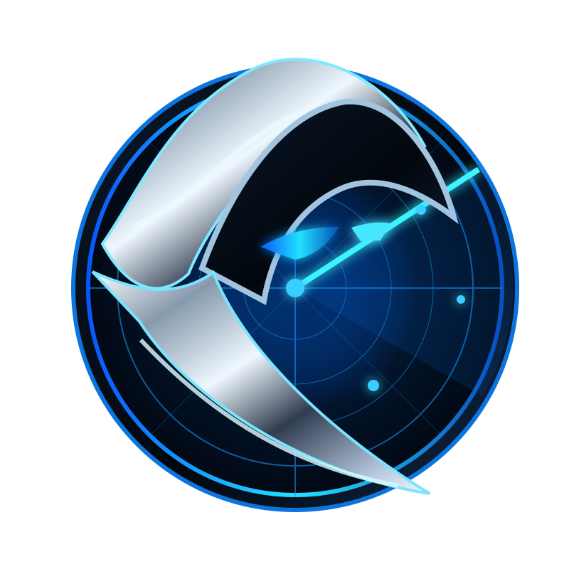

Surveillance de sources
Collecte limitée à des flux publics identifiés et explicitement autorisés. Chaque nouvelle source passe par une validation technique.
Projet personnel · Identité en cours de validation · Pilote privé
Réalisation 07 • Branding • Plateforme de veilleRepérer les concours gratuits, qualifier les sources et garder le contrôle. Une identité de vigie numérique au service d’un produit de veille sobre, sécurisé et transparent.

PRIZE REAPERSCAN · VERIFY · DISCOVERCollecte limitée à des flux publics identifiés et explicitement autorisés. Chaque nouvelle source passe par une validation technique.
Extraction des titres, liens et dates, normalisation des URL et déduplication pour éviter le bruit des annonces répétées.
Exclusion des annonces manifestement payantes ou réservées aux adultes. Les conditions exactes restent à confirmer auprès de l’organisateur.
Identification de formulations problématiques et présentation d’un statut « à vérifier », jamais d’une promesse de gain.
Vue synthétique avec filtres et provenance des annonces pour faciliter la lecture. Aucun compte social nécessaire pour consulter le tableau.
Tests sur les flux, suivi de la disponibilité et exécution planifiée uniquement après validation de la source et de ses conditions d’usage.
Les annonces de concours sont dispersées. Leur fraîcheur, leur légitimité et les conditions d’accès sont souvent difficiles à comparer.
Un collecteur en lecture seule, une grille de qualification explicite et un tableau privé qui distingue détection et validation effective.
Anthracite profond, argent chromé et bleu électrique : un emblème entre radar et vigie, conçu pour être reconnaissable sur desktop comme sur mobile.
Travailler l’identité et l’interface avec les contraintes techniques réelles : provenance visible, statuts compréhensibles, confidentialité et évolutivité.
Le moteur de lecture RSS et les contrôles sont développés. Une source pilote a répondu aux tests techniques. La surveillance autonome, la disponibilité juridique du nom et les vérifications d'éligibilité ne sont pas présentées comme définitivement acquises.
« Prize Reaper » est un nom de travail. Recherche d’antériorités et disponibilité des noms de domaine à confirmer avant exploitation commerciale.
Aucune collecte hors autorisation, aucun contournement d’accès et aucune republication du catalogue d’un tiers.
Pas de participation automatique, pas de paiement, pas d’envoi de justificatif d’identité ni de réclamation de lot sans vérification humaine.
Un scénario de conception : les contenus détectés ne constituent pas des concours validés.
Vérifier les conditions de réutilisation et autoriser explicitement l’URL du flux public.
Lire les données disponibles, éliminer les doublons et filtrer les signaux manifestement incompatibles.
Afficher une annonce avec sa source, son niveau de confiance et les informations à contrôler avant toute démarche.
Collecteur et tableau de bord construits ; tests logiciels et premier test d’un flux public réalisés. Les sources supplémentaires et la mise en production restent conditionnées aux validations nécessaires.
Source autorisée et joignable, date exploitable, absence de faux statut « validé », audit des liens, rendu mobile et tests de non-régression.
Les visuels de cette fiche sont des créations graphiques et non des captures authentiques d'un outil déjà commercialisé.
Branding, design produit et développement : construisons une expérience cohérente, de la première idée au prototype.